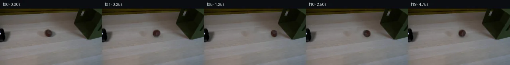

![首帧]()

Round 00
2026-11-05T07:45:06.704143+00:00像素候选变化代码 +231/−0inspection 更新
pixels 27ab9d7deeb54f48 · code bbfb8c15889d26b4
查看本轮 generate.py 真实 diff
--- previous/generate.py
+++ current/generate.py
@@ -0,0 +1,231 @@
+from pathlib import Path
+
+import cv2
+import numpy as np
+from PIL import Image, ImageDraw, ImageFilter
+
+from artifact_io import save
+
+
+ROOT = Path(__file__).resolve().parent
+W, H = 256, 144
+
+
+def smoothstep(edge0, edge1, value):
+ value = np.clip((value - edge0) / (edge1 - edge0), 0.0, 1.0)
+ return value * value * (3.0 - 2.0 * value)
+
+
+def reconstruct_table(source):
+ """Remove the starting ball/shadow while leaving the rest of the shot untouched."""
+ mask = np.zeros((H, W), np.uint8)
+ # Compact ball plus its soft right/bottom floor shadow.
+ cv2.ellipse(mask, (122, 63), (18, 14), 0, 0, 360, 255, -1)
+ # A narrow feather avoids a hard boundary in the pale wood grain.
+ mask = cv2.GaussianBlur(mask, (5, 5), 0.8)
+ mask = np.where(mask > 22, 255, 0).astype(np.uint8)
+ return cv2.inpaint(source, mask, 4, cv2.INPAINT_TELEA)
+
+
+def extract_ball(source, restored):
+ """Make a small premultiplied RGBA sprite from the photographed ball."""
+ cx, cy = 122.0, 63.0
+ x0, y0, x1, y1 = 104, 47, 141, 79
+ rgb = source[y0:y1, x0:x1].astype(np.float32)
+ yy, xx = np.mgrid[y0:y1, x0:x1]
+ radius = np.sqrt(((xx - cx) / 11.2) ** 2 + ((yy - cy) / 10.3) ** 2)
+ geometric = 1.0 - smoothstep(0.79, 1.10, radius)
+
+ # Suppress pale tabletop pixels inside the soft elliptical fringe. The
+ # strong core remains opaque and the real fuzzy contour remains feathered.
+ delta = np.linalg.norm(
+ source[y0:y1, x0:x1].astype(np.float32)
+ - restored[y0:y1, x0:x1].astype(np.float32),
+ axis=2,
+ )
+ evidence = smoothstep(3.0, 25.0, delta)
+ core = 1.0 - smoothstep(0.62, 0.84, radius)
+ alpha = np.maximum(core, geometric * evidence)
+ alpha = cv2.GaussianBlur(alpha.astype(np.float32), (3, 3), 0.45)
+ premul = rgb * alpha[..., None]
+ return premul, alpha, (cx - x0, cy - y0)
+
+
+def add_shadow(frame, center_x, opacity=0.28, width=13.0):
+ """Render a diffuse contact shadow tied to the ball's table position."""
+ layer = Image.new("L", (W, H), 0)
+ draw = ImageDraw.Draw(layer)
+ left = center_x - width
+ draw.ellipse((left, 64.0, center_x + width + 3.0, 74.0), fill=int(255 * opacity))
+ layer = layer.filter(ImageFilter.GaussianBlur(3.2))
+ a = np.asarray(layer, dtype=np.float32) / 255.0
+ out = frame.astype(np.float32)
+ # Wood-colored shadow rather than neutral black, matching the source.
+ shadow_tint = np.array([54.0, 43.0, 35.0], dtype=np.float32)
+ out = out * (1.0 - a[..., None]) + shadow_tint * a[..., None]
+ return np.clip(out, 0, 255).astype(np.uint8)
+
+
+def add_contact_darkening(frame, strength):
+ if strength <= 0:
+ return frame
+ layer = Image.new("L", (W, H), 0)
+ draw = ImageDraw.Draw(layer)
+ draw.ellipse((182, 57, 191, 67), fill=int(44 * strength))
+ layer = layer.filter(ImageFilter.GaussianBlur(2.1))
+ a = np.asarray(layer, dtype=np.float32) / 255.0
+ # This tiny olive cast reads as fabric compression without moving the box.
+ tint = np.array([25.0, 28.0, 13.0], dtype=np.float32)
+ out = frame.astype(np.float32) * (1.0 - a[..., None]) + tint * a[..., None]
+ return np.clip(out, 0, 255).astype(np.uint8)
+
+
+def composite_ball(frame, premul, alpha, pivot, center, angle, squash=(1.0, 1.0)):
+ ph, pw = alpha.shape
+ px, py = pivot
+ theta = np.deg2rad(angle)
+ c, s = np.cos(theta), np.sin(theta)
… diff truncated; 144 more lines …